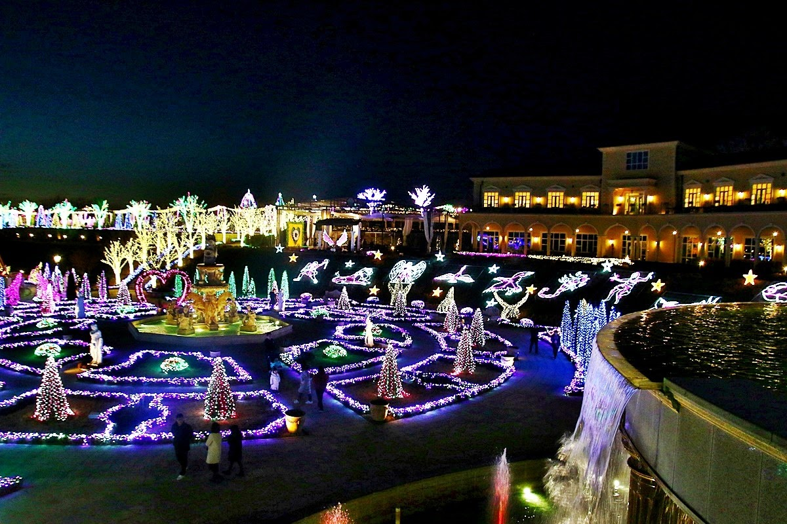

경기도

야경 명소로 꼽히는 안산 별빛마을!
100여 개의 다양한 포토존과 테마별 정원으로 꾸며져 연인들의 데이트 명소로 떠오르고 있으며, 아무 곳에서나 찍어도 최고의 인생샷을 남길 수 있다!
가장 아름다운 때는 바로 어둠이 내린 뒤, 오색 빛으로 꾸며진 포토존과 정원에 조명이 켜질때!
-
주소 : 경기 안산시 상록구 수인로 1723
-
운영시간 : 평일 16:00 - 22:00
주말 15:00 - 24:00
-
전화번호 : 031-484-5050
-
요금 : 대인 7,000원
소인 5,000원
장애인, 경로 5,000원

연인이나 가족 등 주변 경치를 구경하며 부담없이 남녀노소 글램핑을 할 수 있는 곳!
좋아하는 사람과 손잡고 이번 기회에 가보시는 건 어떨까요?
-
주소 : 경기 고양시 덕양구 통일로493번안길 103-30
-
운영 시간: 매일 11:00 - 21:00
-
전화번호 : 02-381-2600

경기 광명시에 자리한 이색적인 문화 관광지 동굴 테마파크 '광명동굴'!
최근 미디어 아티스트와 협업해 암흑 동굴을 빛의 예술로 물들이는 파사드가 입소문을 타면서 연인들의 데이트 코스로 각광받고 있다!
-
주소 : 경기 광명시 가학로85번길 142
-
운영 시간: 매일 09:00 - 18:00(마지막 입장 17시)
-
전화번호 : 070-4277-8902
-
요금 : 대인 6,000원
군인 4,000원
청소년 3,500원
어린이 2,000원
장애인 무료

해지기 전에 입장해서 노을과 함께 사진을 찍으며 추억을 담는 게 좋은 퍼스트가든 별빛축제!
보통 별빛축제는 크리스마스 시즌을 맞이해 겨울에 많이 하지만 퍼스트가든에서는 365일 진행된다고 합니다!
-
주소 : 경기도 파주시 탑삭골길 260
-
운영시간 : 매일 10:00~22:00(입장마감 21:00)
-
전화번호 : 031-957-6861
-
요금 : 주말 및 공휴일 - 대인 1,0000원 / 소인, 우대 9,000원
평일 - 대인 9,000원 / 소인, 우대 8,000원
-
사이트 : http://www.firstgarden.co.kr